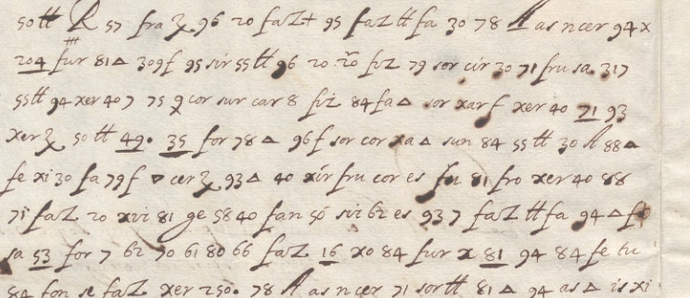

At a glanceKey from adjacent plaintext · partial (88% of the cipher)
- The letter
- Antonio Dávila y Zúñiga, Marquis of Mirabel, Spanish ambassador in France, to Don Carlos Coloma, Spanish ambassador in London; Lyon, 8 December 1622. The opening and the close are in clear; the body, two leaves of it, is in cipher. The signature and a postscript are autograph.
- Where
- Biblioteca Nacional de España, RES/227/122 (Mss. 18.692), 2 leaves, on BNE Digital (CC BY 4.0). Catalogue 1601 here. No DECODE record, no entry at Cryptiana, no edition or study of the letter found.
- The cipher
- A syllabary on a grid (fV = tV, xV = nV, cVr = rV and so on), two-digit numbers for letters and syllables, three-digit numbers and underlined tokens for code words, and a ligature for que. 969 tokens of 171 kinds.
- How it was read
- Brice Dudout rebuilt the key from the Spanish text written in the margin beside the cipher passages of the Duke of Feria’s letters to Coloma (RES/227/120–129), which use the same system, and tested it on passages held out in advance. The tests do not validate it: two of four measurements are partial and two failed.
- What it says
- Louis XIII’s proposals to the Duke of Savoy and the French answer; then Mirabel’s talk with the Queen Mother on the forts of the Valtellina and a Lorraine garrison, and a warning about Richelieu: he is not of the King’s Council “but it is he who governs the Queen Mother”.
- Still open
- 21 words unresolved, 29 restored from the sense alone, nine code words, three marked signs with no value. The reading is rough: by the repository’s sentence check only 52 of 148 sentences of the normalised text (35%) are clean.
- Credit
- Brice Dudout (Europe chiffrée), working with Claude Opus 5.5 agents: the transcription, the key, the tests and the reading, contributed by pull request #279. The margin clears of Feria’s letters are the contemporary decipherment the key was built on.
01 The letter
Mirabel writes from Lyon to Carlos Coloma, the Spanish ambassador in London. The clear opening refers back to an earlier letter (De Miñón os escribí a los 21 del pasado) and promises an account of the proposals the King of France had made to the Duke of Savoy. The cipher carries the substance: the French proposals (restitution of the Valtellina, help in case of a rupture, the enterprise of Geneva), the answer given, and the Duke’s return home from Avignon. A second part reports Mirabel’s own talk with the Queen Mother about the deposit of the Valtellina forts, a Lorraine garrison and the capitulaciones de Aranjuez, and a short description of Richelieu.
The letter is two leaves: f.1r has 25 lines, f.1v has 36. BNE Digital catalogues it as Carta cifrada. No decipherment is kept with it and no key is on its leaves. A scholarly edition may exist (M. Á. Guill Ortega’s biography of Coloma, 2007, was not read), and if it prints this letter or its key we will credit it.

02 The cipher
Most of the text is written as syllables. A consonant sign changes its consonant by the vowel it carries: in this grid fV stands for tV, xV for nV, cVr for rV, xVr for sV, sVr for cV, sVn for pV, fVn for pVr, frV for gV and Vs for mV. Two-digit numbers stand for single letters and syllables, three-digit numbers and underlined numbers for whole words (309 negocio, 204 estado, _123_ Duque, 308 nuestro señor), and the ligatures faz, fez and fuz stand for que. Marked signs are different signs: a triangle is not a plain V, 94‡ is not 94, 20ʳ is not 20, as the clears of RES/227/128–129 show. Words are not divided.
Three marked signs have no value: a barred 4 (4‡, in grande), a q with an extra stroke below (in libre) and an x with two dots below (in llegase). They are in no key or clear available, so those three words stay restored.
The same system is used in the Duke of Feria’s letters to Coloma (BNE RES/227/120–129) and in BNE MSS/18428 (Mirabel’s letters to Gondomar). The key is partial and is published as targets/coloma1622/key.tsv (CC BY 4.0).
03 The key and its tests
Where the key comes from. The margin of the Duke of Feria’s letters to Coloma carries a contemporary clear beside each cipher passage. Brice Dudout and his agents aligned those clears with the cipher to deduce the grid and the syllabary, froze each key by SHA-256 before its test, and extended it from the clears of RES/227/128 and 129 and from Mirabel’s own letter. The last key frozen before a test is C04.
The tests. Thresholds were fixed in advance: a key is validated at 0.85 of characters and at least 0.30 above the best of 200 shuffled keys; partial when the gap is at least 0.30 without the 0.85. Characters are aligned against the contemporary clear.
| test | held-out passage | score | best control | result |
|---|---|---|---|---|
| C01 | Mirabel f.1v ll. 12–21 (no clear) | 0.333 | 0.169 | failed |
| C02 | Feria, RES/227/127 f.1r | 0.761 | 0.437 | partial |
| H3 | Feria, RES/227/128 f.1v | 0.690 | 0.419 | failed (gap 0.271) |
| H4 | MSS/18428 p. 15 left | — | — | no measurement |
| H5 | MSS/18428 p. 44 right | 0.814 | 0.466 | partial |
From targets/coloma1622/validation.txt. These are the contributor’s own pre-registered tests, not the project’s _validate.py.
What that means. The key is partial by our protocol and not validated. Of four measurements, two are partial and two failed. A fifth reserve passage (H4) was burned without a measurement: its “margin clear” turned out to be the verso seen through the paper. That rule was fixed in advance, so H4 was not replaced that day. The first test (C01) was on lines of the target letter itself, measured with an earlier key and read with the later one. The key does well on the passages with a clear to measure against and has never reached the bar on one; the reading below rests on a key that fits those clears only in part.
04 The reading
Every one of the 969 cipher tokens is covered in order by the word table of reading.md: 425 words, of which 338 are certain (values of the key, or a code word held by a contemporary clear), 37 probable, 29 restored from the sense alone and 21 unresolved. Certain and probable make 375 words, 88.2%; with the restored words, 95.1%. Restored words are counted as holes, so the 95% bar is not reached and the letter is read in part.
That figure counts words. The sentences are another matter. Counted as the repository does it (a sentence is clean with at most one hole in ten words), 52 of 148 sentences of the normalised reading are clean, 35%, and the check classes the text as not yet a reading by that test. Many sentences construe in Spanish, but most carry a restored or unresolved word, and several restorations correct a transcribed token from the sense. A blind sheet of 16 shape questions, answered by Brice Dudout, confirmed the transcribed token in eight of them and moved two words to probable. Read these sentences as a working text.
The passage below is the stretch of f.1v in the snip, in the normalised text (unmarked = certain, {x} = probable, [x] = restored, ‹…› = unresolved).
En llegando a que {aquí} di cuenta a la {Reina} madre del {estado} de los negocios, diciendo[la] que le corría {igual} [obligación] en desear y procurar que estas cosas se acomodasen en {buena} [correspondencia] de las dos coronas, pues en ambas tenía tales prendas, aseguróme ‹…› ‹…› que así lo ‹…›. Parecióme dar cuenta deste [Cardenal] de [Richelieu], que aunque no es del [Consejo] deste Rey, es por el que se gobierna la {Reina} madre
On arriving I reported to the Queen Mother on the state of affairs, telling her that she had an equal [obligation] to wish and work for these matters to be settled in good [understanding] between the two crowns, since she had such pledges in both; she assured me […]. I thought fit to report on this [Cardinal] [Richelieu]: although he is not of this King’s [Council], it is he who governs the Queen Mother
- Savoy. The King of France has proposed to the Duke of Savoy the settlement and restitution of the Valtellina, the advantages of it for France and its allies, assistance if no settlement is reached, and help in case of a rupture as in the past; there was also a request for leave and assistance for the enterprise of Geneva (the reading restores who made it). The first proposal was answered that for the present France has other means for the Valtellina affair with the King of Spain, and the answer was put off to Lyon, where the Queen Mother would be told. The Duke went home from Avignon.
- The Queen Mother. Mirabel told her that she had an equal obligation to both crowns and describes Richelieu to her, and the answer, probably hers, objects to the Lorraine garrison as no matter of the capitulaciones de Aranjuez. Mirabel replied that the King of Spain had never doubted the Duke of Lorraine, but that France should also agree to the other points of the capitulations. The answer was that once the deposit of the forts was settled the rest would be; nothing on these points is settled until the King of Spain has been told.
- The end. The close, guarde os Dios como deseo, de León [Lyon], a 8 de diciembre 1622, is in clear, signed by the Marquis.
A historian will want the sentence on Richelieu first. It is read with a restored Cardenal (code 53), a restored Consejo (code 81) and the name written out in syllables; a scholar should treat the code words in it as inferred.
05 What remains uncertain
- 21 unresolved words and the code words 141, 48, 39, 295, 2, 127, 40, 264, the second place of 52 and the group L 54 y (“la Valtelina” or “la religión católica”). Each has one or two places and no clear in the training letters. Blocker: open codes; they are on the list of workable partials.
- 29 restored words, not counted in the 88.2%. Among them: 53 Cardenal, 81 Consejo, K respuesta, 68 ciudad, 139 efecto, 317 obligación, 318 oficio, 35 correspondencia and R razón, each placed by sense at a single place. About ten of them correct a transcribed token.
- The three marked signs (4‡, q with a stroke below, x with two dots below). A new letter of the same system with a contemporary clear is needed; MSS/18428 has some.
- The key is not validated (section 03). A second letter in the same system, read with a clear to measure against, would settle whether it generalises.
- One reader. An AI agent transcribed and read; Brice Dudout answered the shape sheet only. No palaeographer has checked the letter.
- Not read. M. Á. Guill Ortega, Carlos Coloma (2007); Herrero García, Avisos (2023), on the Mirabel–Gondomar letters of MSS/18428 (the page blocked our fetch); the index of the Colección de documentos inéditos. Three web searches found no edition of this letter.
Full texts
The transcription and the decryption of every document on this page, so that the reading can be used and checked. Short files are shown here; all are in the repository.
RES/227/122, f.1r-f.1v: cipher body of the letter read in part
Louis XIII's proposals to the Duke of Savoy (Valtellina, help in case of rupture, Geneva), the French answer and the Duke's return from Avignon; Mirabel's talk with the Queen Mother on the deposit of the Valtellina forts, a Lorraine garrison and the capitulations of Aranjuez; Richelieu, not of the King's Council, governs the Queen Mother.
Builds coherent sentences, but under the read bar of 95% of words read as sense (88% here); the holes are marked in the reading.
Transcription
# coloma1622 - Madrid, BNE RES/227/122 (Mss. 18.692): the Marquis of Mirabel to Carlos Coloma, Lyon, 8 Dec 1622, cipher body. # One line per manuscript line; f.1r then f.1v. Transcribed by AI agents from the BNE images (not reproduced), 4-5 Nov 2026. # Notation: tokens separated by spaces; _x_ = underlined token (code word); faz / fez / fuz = ligature (que); 'fa z' = z written # apart; [x] = clear word in the body; <?> or ? = illegible / doubtful. Marked signs (value not established): 4‡ = barred 4 # (the reader's '4+'), q̲ = q with an extra stroke below, x̤ = x with two dots below. # Reading copy (v4): the blind shape sheet M16 applied (answers by Brice Dudout), see NOTES.md. # f.1r 1r.01 30 sor os 93 ii 57 tt fo 71 cer f fi fu sir 62 tt 94 78 88 x fe 80 xa 78 Δ sor 1r.02 Ð 89 xe tt sir 83 faz 40 84 fe tu 75 xur f 20 80 40 96 Δ xer 79 xir y 66 ss 1r.03 cir 40 tt 94 _141_ 62 Δ cer sir 56 z 96 79 xur 20 xir Δ fe tt sir t 56 z _60_ 94 1r.04 xo t sor os 93 7 xe 30 xur xar fi f cha sir 62 z t xir es os 48 for 78 f 1r.05 95 che cer z sir 83 fur R _121_ for xe 20 tt 96 faz se tu _52_ + xir os 81 40 1r.06 sor os 94 62 _39_ so tt _60_ for cor Ð vin ii ss tt fo cha 91 cer 76 98 xur 98 66 1r.07 xar _71_ 81 4 61 sor ss z 81 san xar 96 [Tambien] V 60 sor 4‡ car z 94 1r.08 61 tt Δ fa z sir 20 ss tt faz xer 79 95 55 xer sen 7 is xir 62 z 71 40 xir Δ fe 1r.09 z sir 20 fan 30 78 _138_ 94 fri xe q car L 78 ▽ cir es car q cor son xi 1r.10 sir 62 tt xer 79 cer Δ son tt 95 64 faz fur q cer xer tt fe 48 88 79 fe tu 1r.11 fur es 95? 64 Δ fan 20 78 f sor xar Δ 94 78 88 x fo 80 xa sor tt se tu 308 1r.12 34 ss tt faz 84 fen 20 88 xer fo as cir 20 sa _31_ 40 xur 55 7 96 20 xar fi 1r.13 Δ f cha sir 62 tt 94 fo 96 Δ faz xir xo x̤ ss fra xer 40 _139_ xer 88 x 1r.14 n cir 40 for 78 Δ 64 che 7 fa Δ fri 79 4 20 sir 30 [agradeciendose las mucho] 1r.15 56 tt 80 fur as Δ xer cer is fi 62 78 _K_ fan 20 84 fa _68_ 1r.16 94 7 56 64 z fan 30 93 7 faz tt fa t 78 _L_ as m cer 94 84 fo Δ 309 Δ 1r.17 [Con esto] xer 91 x 90 64 se _123_ 20 xur _60_ for f 94 t 90 xo z 71 se bo 1r.18 _53_ _39_ 55 so tt 94 295 fur 84 fa? _2_ ²⁰ # f.1v 1v.01 so tt R 57 fra z 96 20 faz + 95 faz tt fa 30 78 _A_ as n cer 94 x 1v.02 _204_ fur 81 Δ 309 f 95 sir ss tt 96 20 ²⁰ fuz 79 sor cir 30 71 fru sa 317 1v.03 ss tt 94 xer 40 7 75 q cor sur car 8 fuz 84 fa Δ sor xar f xer 40 _71_ 93 1v.04 xer z so tt _49_ _35_ for 78 Δ 96 f sor cor xa Δ sun 84 ss tt 30 h 88 Δ 1v.05 fe xi 30 fa 79 f ▽ cer z 93 Δ 40 xir fru cor es fu 81 fro xer 40 88 1v.06 7i faz 20 xvi 81 ge 58 40 fan 50 sir 62 es 93 7 faz tt fa 94 Δ fe 1v.07 fa _53_ for 7 62 50 61 80 66 faz _16_ xo 84 fur x _81_ 94 84 fe tu 1v.08 84 fon se faz xer 250 78 _A_ as n cer 71 sor tt 81 Δ 94 as Δ is xi 1v.09 f fo 7 f fi 50 xe 40 4 68 fo cir 93 m faz sun 50 94 V 20 99 ss _49_ Δ 1v.10 71 as 81 Δ 318 f z? 61 sor xer 79 xo 89 93 n se cer san car 7 50 z 78 1v.11 fru t 7 xi sir 62 z 81 cer xe xar xo xir so tt 96 _60_ sor xar 94 faz 1v.12 xer V 20 H 78 ss tt 78 Δ _56_ sir 62 xe Δ for t car tt 77 66 ss 76 1v.13 fan 50 sir ss z 96 78 _140_ 4 20 99 8 son 98 sor z chi t ss 72 20 94 x 1v.14 fur 81 cer xa 71 faz 68 Δ fa cir 40 fan 30 _30_ xa 7 84 fa _127_ faz 1v.15 for _40_ I 94 san 78 H car 75 264 fur x _123_ 94 faz son m cir 20 81 1v.16 cer xe xer f xer t n is fi 50 xer 95 fre 79 faz xu tt 98 7 se tu 308 1v.17 34 40 90 30 97 93 96 94 78 _79_ faz xer for 89 fe xe 7 fur x _123_ 1v.18 fen 62 faz _140_ _R_ fuz faz cir so tt 96 94 fe tu fo as 8 es 84 fa 1v.19 fan fe 94 78 Δ _56_ sir 62 xe f 94 t car tt 73 66 50 72 chu ss xer sor z 1v.20 90 xi 56 z 96 50 z 81 Δ 94 as Δ son z fo f for x 83 95 73 62 es faz 1v.21 _30_ xa 96 84 fo for x 94 son xvi fo fur 81 Δ 225 f z cer zan xer 1v.22 t _71_ 93 cir 20 81 94 as Δ faz _140_ as tt fe xe 7 81 Δ 83 fa faz 84 1v.23 fo Δ 96 Δ tu zen Δ xer 20 sor 7 93 xer tt 50 z 81 faz fo _62_ 20 1v.24 as fe cir 83 94 x 204 71 faz 78 _L_ _54_ _y_ xa xer sor tt xer 7 88 1v.25 xe 50 z se faz 66 71 fi 50 xe 75 xer fe z m cir 20 se san xor 80 1v.26 q̲ cer fan 20 fo 96 Δ 81 Δ _60_ Δ _52_ xo Δ xo cer xor x 91 sor 1v.27 tt se xa‹ga?› 93 94 84 fo Δ sun tt fo Δ
Decryption: decryption.txt
Reading: reading.md
Translation
# coloma1622 - English translation (working translation of reading.md) Read in part: 88.2% of the cipher words without restorations. `[x]` = restored word, `[…]` = unresolved; *italic* = clear in the manuscript. *[…] of the proposals the King has made to the Duke of Savoy, which were:* the settlement and restitution of the Valtellina; the advantages that would follow from it for this King and his allies […], receiving his assistance in case no settlement were reached to his satisfaction. Likewise […] the Duke's quarrels, wishing that the [Most Christian] King settle them, or […] in case of a rupture favour his cause as he did in the past. *He also* [made] [great] instance to be given leave and assistance for the enterprise of Geneva. To the first proposal he was answered that for the present […] this King uses means for the Valtellina affair with the King our lord, though he hoped some agreement would be reached to everyone's satisfaction; and that if it did not [take effect], he would make use of the offers [the Duke] was making him, *thanking him warmly for them*. For the rest, the [answer] was put off to this [city] of [Lyon], to report to the Queen Mother on these affairs. *With this* the Duke went back home from Avignon […]. On arriving I reported to the Queen Mother on the state of affairs, telling her that she had an equal [obligation] to wish and work for these matters to be settled in good [understanding] between the two crowns, since she had such pledges in both; she assured me […]. I thought fit to report on this [Cardinal] [Richelieu]: although he is not of this King's [Council], it is he who governs the Queen Mother, and he has authority with the other ministers, so that he can [do] good and bad [offices]. He is not forbidden to object to the Lorraine garrison, the case not being a matter spoken of in the capitulations of Aranjuez, since it seemed to her to show little confidence in [the Duke] of Lorraine; and that, to end this […], she [would like] the […] and word and […] of the Duke, that there could be Lorrainers, to be accepted. I told her that the King our lord had never [doubted] the confidence due to the Duke, but that it was [reasonable] that, if this King wished to take this part of the capitulations of Aranjuez, he should also agree to their other points. She told me that once this matter of the deposit of the forts was ended, […] the rest would be settled: that is, to keep them until these two Kings agreed on matters of state, that the […] be [kept] in the state it is in today, and that the passage would be [free] in all cases […]. Nothing was resolved with him on these points *until report is made to His Majesty. God keep you as I wish. Lyon, 8 December 1622. The Marquis.*
Key: key.tsv
06 Sources
- Madrid, Biblioteca Nacional de España, RES/227/122 (Mss. 18.692), BNE Digital, images 5–6 (CC BY 4.0).
- BNE RES/227/120–129, the Duke of Feria to Coloma, with the margin clears used to build and test the key; BNE MSS/18428, Mirabel to Gondomar.
- Brice Dudout, Europe chiffrée, with Claude Opus 5.5 agents: transcription, key (CC BY 4.0), tests, reading; pull request #279.
- Catalogue entry 1601 and the pointers to Feria’s letters (lead 1602) and to MSS/18428 (lead 1271): Daniel Bourdeau.
Notes, transcription, decryption, key and tests: targets/coloma1622/.